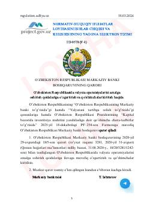

ORO‘zbekiston Respublikasida valyuta operatsiyalarini amalga oshirish qoidalariga kiritilayotgan o‘zgartirishlar.
Mazkur hujjat O‘zbekiston Respublikasida valyuta operatsiyalarini amalga oshirish qoidalariga o‘zgartirish va qo‘shimchalar kiritish masalalarini tartibga soladi. Qoidalar Markaziy bank boshqaruvi tomonidan ishlab chiqilgan bo‘lib, tijorat banklari va mijozlar o‘rtasidagi valyuta amaliyotlarini takomillashtirishga qaratilgan.